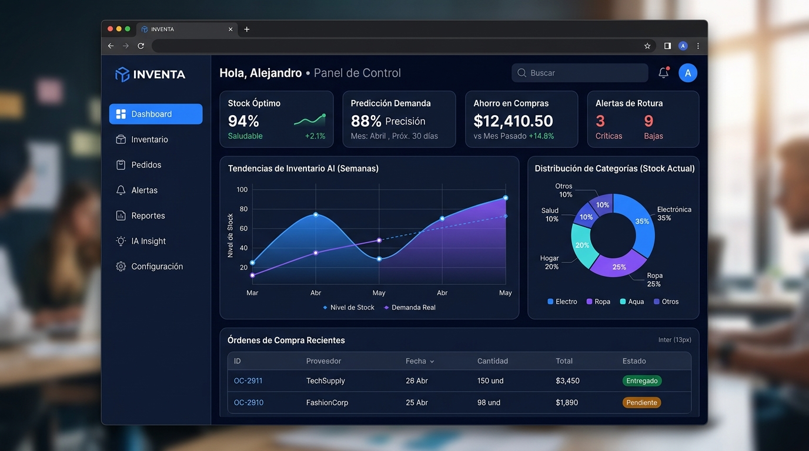

INVENTA — El Cerebro de Compras para tu Empresa
Anticipación de demanda, control de inventarios y compras autónomas para Latinoamérica.
El Problema de Negocio
Las medianas empresas sufren pérdidas continuas por quiebres de stock (ventas perdidas) y sobreinventario (capital de trabajo inmovilizado), al gestionar su abastecimiento en hojas de cálculo desconectadas y decisiones intuitivas.
La Solución de Producto
Diseñé una plataforma SaaS que centraliza datos de ventas y aplica modelos predictivos de series temporales para calcular el punto de reorden óptimo, generando sugerencias automáticas de compra y un dashboard ejecutivo en tiempo real.
Mi Rol de Liderazgo (Product & Tech Lead)
Lideré el ciclo integral: desde entrevistas de Product Discovery con gerentes de compras, estructuración de historias de usuario en Jira, hasta la definición de arquitectura cloud y validación continua con Lean Startup.
